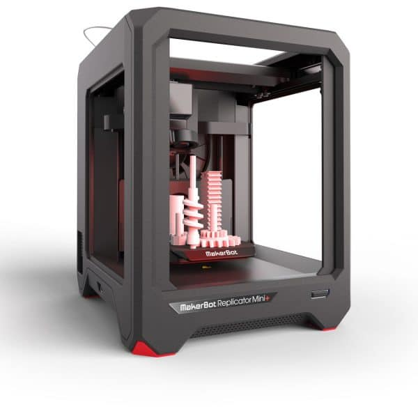
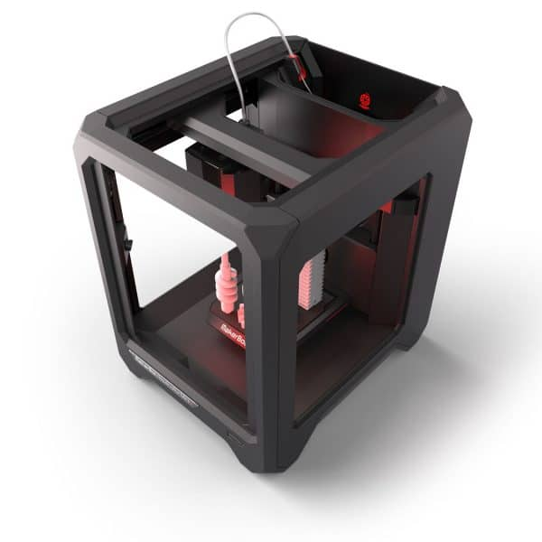
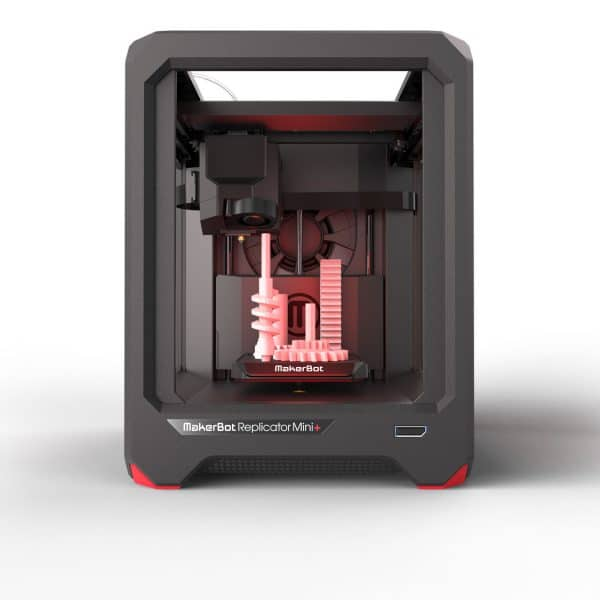

3D printeris
Rīgas Valsts 1.ģimnāzija nodrošina skolēnus ar mūsdienu aprīkojumu, to skaitā ar 3D printeri MakerBot Replicator Mini+ Compact 3D Printer. Tas apvieno sevī lietošanas vienkāršību un ilgu drošumu. Šī modele tika vairākkārt uzlabota un pilnveidota, pateicoties 380,000+ stundu testēšnai. Tagad var printēt ātrāk, vieglāk un ar par 28% lielāku jaudu nekā tā priekštecis.
Tehniskais apraksts https://www.makerbot.gr/shop-makerbot-products/replicator-mini-compact-3d-printer/
|  |  |  |
PRINTING
Print Technology: Fused Deposition ModelingBuild Volume: 10.0 L X 10.0 W X 12.5 H cm [3.9 X 3.9 X 4.9 in] 1,250 cubic cm [76 cubic in]
Layer Resolution: 200 microns [0.0078 in]
Filament Diameter: 1.75 mm [0.069 in]
Filament Compatibility: MakerBot PLA Filament Small Spool 0.2 kg [0.5 lb]
Nozzle Diameter: 0.4 mm [0.015 in]
XY Positioning Precision: 11 microns [0.0004 in]
Z Positioning Precision: 2.5 microns [0.0001 in]
Print File Type: .Makerbot
MECHANICAL
Construction: PC ABS with Powder-Coated Steel ReinforcementBuild Surface: Injection Molded Acrylic
Stepper Motors: 1.8° Step Angle with 1/16 Micro-Stepping
CAMERA
Camera Resolution: 320 X 240SOFTWARE
Software Bundle: MakerBot Desktop SoftwareSupported File Types: Stl, Obj, Thing, Makerbot
Operating Systems: Windows (7+), Mac Os X (10.7+), Linux (Ubuntu 12.04+, Fedora 19+)
ELECTRICAL
Power Requirements: 100–240 VAC; 0.75–0.41A; 50–60 Hz; 100WConnectivity: Wi-Fi, USB
TEMPERATURE
Ambient Operating Temperature: 15 to 26°C [60 to 78°F]Storage Temperature: 0 to 38°C [32 to 100°F]
SIZE & WEIGHT
Product Dimensions: 29.5 L X 31.0 W X 38.1 H cm [11.6 X 12.2 X 15.0 in]Shipping Box: 38.7 L X 39.7 W X 52.7 H cm [15.3 X 15.6 X 20.8 in]
Product Weight: 8 kg [18 lb]
Shipping Weight: 10 kg [22 lb] with Accessory Kit Top